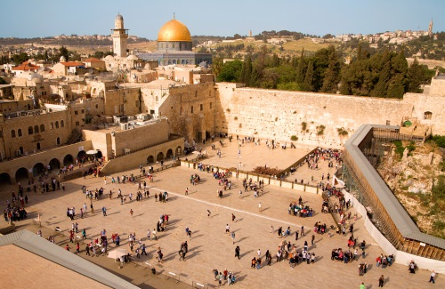

העיר העתיקה

העיר העתיקה בירושלים היא האזור העירוני העתיק של ירושלים. שטחה המוקף על ידי חומות ירושלים הוא כ-850 דונם. כמו כן נכללים בעיר העתיקה הר ציון ועיר דוד, הנמצאים מחוץ לחומות, בסמוך ומצד דרום. העיר העתיקה מחולקת ל-4 רבעים: הרובע המוסלמי, הרובע היהודי, הרובע הנוצרי והרובע הארמני. כיום מתגוררים בה כ-39,000 בני אדם. בחומת העיר העתיקה שמונה שערים: שער יפו, שער שכם, שער ציון, שער הרחמים, שער האריות, שער הפרחים, השער החדש ושער האשפות. העיר העתיקה מהווה מוקד משיכה מרכזי לתיירים בני דתות ואומות שונות, הבאים מרחבי העולם לבקר באתרים הקדושים הנמצאים בה, ובהם: הר הבית, הכותל המערבי וכנסיית הקבר.
הכותל המערבי
הכותל המערבי הוא אחד מארבעת קירות התמך המקיפים את הר הבית זה כאלפיים שנה, משלהי תקופת בית שני ועד ימינו. במסורת היהודית מיוחסת לכותל המערבי קדושה יתרה, וכנראה כבר במאה ה-14 נקבע מקום תפילה בסמוך אליו, המשמש לכך עד היום. לכותל המערבי חשיבות דתית, לאומית והיסטורית, ואלה מביאים אליו מיליוני מבקרים בכל שנה, יהודים ושאינם יהודים - בני מצווה חוגגים שם עם משפחתם, חיילים נשבעים אמונים ברחבתו העליונה, ואישים מרחבי העולם מבקרים בו.
יד ושם

יָד וָשֵׁם הוא מוסד רשמי להנצחת זכר השואה בישראל הממוקם מעל הר הזיכרון בירושלים, בחלקו המערבי של הר הרצל. הקמת המוסד החלה כבר בסוף שנת 1945, וב-19 באוגוסט 1953 הוא הוכרז כמוסד רשמי של מדינת ישראל בחוק מיוחד של הכנסת - "חוק זיכרון השואה והגבורה – יד ושם, תשי"ג-1953". יד ושם מופקד על תיעוד תולדותיו של העם היהודי לפני השואה ובמהלכה, הנצחת סיפור חייהם וזכרם של מיליוני הנספים והנחלת מורשת השואה לדורות הבאים. לשם כך המוסד עוסק בהנצחה ותיעוד של מאורעות השואה, באיסוף חפצים ומסמכים, בגביית עדויות על השואה ופרסומן, באיסוף שמות הנספים בשואה והנצחתם, במחקר ובחינוך.
יד קנדי

יד קנדי הוא אתר הנצחה לנשיא ארצות הברית ג'ון קנדי, שהוקם באזור עמינדב בהרי ירושלים. האתר נחנך ב־4 ביולי 1966, במעמד עם רב ובנוכחות השופט ארל וורן, נשיא בית המשפט העליון של ארצות הברית. האתר תוכנן על ידי האדריכל דוד רזניק וביצוע התוכנית נוהל בידי ידידיה איזנשטט, אדריכל קרן קיימת לישראל. הרעיון להקמת יער ההנצחה הקרוי על שם הנשיא, ובמרכזו אתר ההנצחה היה רעיון של מקס ברסלר, ראש הקרן הקיימת לישראל בארצות הברית בעת הרצחו של הנשיא. צורתו של האתר ייחודית: הוא בנוי כגזע עץ כרות, הבא לסמל את הירצחו של הנשיא או כהר געש, המסמל את כוחו ומרצו של הנשיא. המבנה בנוי מ-53 עמודי בטון, שגובה כל אחד מהם 7.2 מטרים - כל עמוד מייצג אחת ממדינות ארצות הברית גם על ידי סמל המדינה המוטבע על כל אחד מהעמודים, כולל מחוז קולומביה, ושני עמודים עם סמל הקק"ל. שטח הרחבה שסביב המבנה כ-1,500 מ"ר והיא משמשת לאירועי הנצחה ואירועי ידידות בין ישראל וארצות הברית. בתוך אתר ההנצחה דולק נר זיכרון לזכר הנשיא.